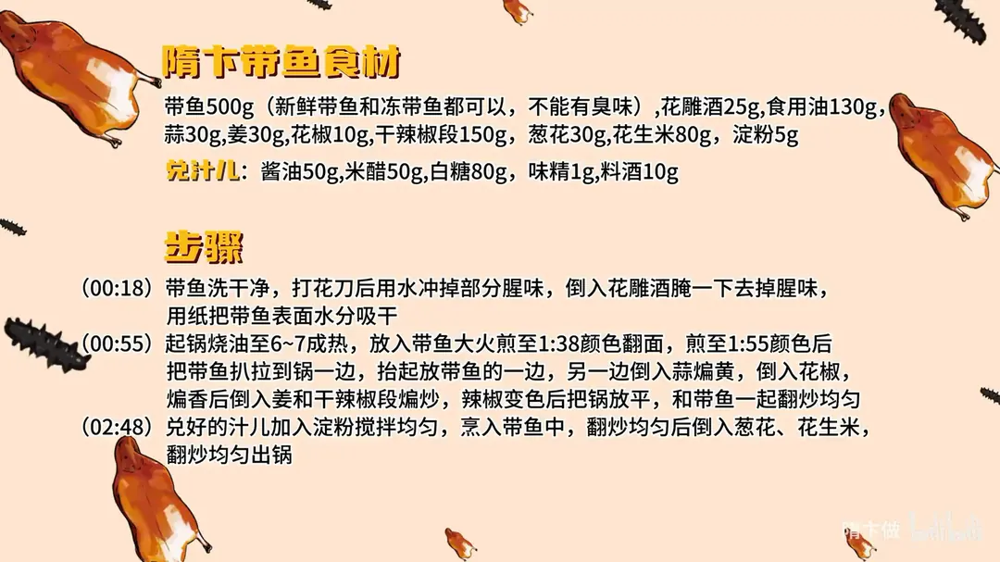

隋卞带鱼
隋卞一做。带鱼 500g 打花刀、花雕酒去腥，130g 油六到七成热下锅大火煎香，扒到锅边后斜锅另炒蒜、花椒、姜和 150g 干辣椒段，最后烹入糖醋汁儿、撒花生米。
原视频：https://www.bilibili.com/video/BV1xi421a7Rp
食材
带鱼、花雕酒、食用油 等 15 样
| 类别 | 用料 | 用量 |
|---|---|---|
| 主料 | 带鱼 | 500g |
| 主料 | 花生米 | 80g |
| 辅料 | 蒜 | 30g |
| 辅料 | 姜 | 30g |
| 辅料 | 花椒 | 10g |
| 辅料 | 干辣椒段 | 150g |
| 辅料 | 葱花 | 30g |
| 调料 | 花雕酒 | 25g |
| 调料 | 食用油 | 130g |
| 调料 | 淀粉 | 5g |
| 兑汁儿 | 酱油 | 50g |
| 兑汁儿 | 米醋 | 50g |
| 兑汁儿 | 白糖 | 80g |
| 兑汁儿 | 味精 | 1g |
| 兑汁儿 | 料酒 | 10g |
步骤
- 备鱼：带鱼洗干净，打花刀后用水冲掉部分腥味，倒入 25g 花雕酒腌一下去掉腥味，再用纸把带鱼表面水分吸干。
- 煎鱼：起锅烧油（食用油 130g）至六到七成热，放入带鱼大火煎，煎至一面颜色到位后翻面，两面都煎上色后把带鱼扒拉到锅的一边。
- 炒香料：抬起放带鱼的一边，让油集中到另一边，倒入 30g 蒜煸黄，再倒入 10g 花椒，煸香后倒入 30g 姜和 150g 干辣椒段煸炒。
- 合炒：辣椒变色后把锅放平，和带鱼一起翻炒均匀。
- 烹汁：兑好的汁儿（50g 酱油、50g 米醋、80g 白糖、1g 味精、10g 料酒）加入 5g 淀粉搅拌均匀，烹入带鱼中，翻炒均匀。
- 出锅：倒入 30g 葱花、80g 花生米，翻炒均匀出锅。
小贴士
- 新鲜带鱼和冻带鱼都可以，但不能有臭味。
讲解要点
难度：★★★☆☆（煎鱼的火候，加上「斜锅炒料」这一手，是这道菜的门槛）
为什么这么做
- 打花刀：刀口让带鱼受热均匀、入味更快，煎出来还有焦脆的层次。
- 花雕酒腌、纸吸干水分：酒去腥；表面水分擦干，下锅才不溅油、不粘锅，也才煎得上色。
- 六七成热下锅、全程大火煎：高温让表面迅速结壳，鱼肉不散、皮不破；家里用煎代替酒店的炸，省油又有焦脆感。
- 鱼扒到锅边、斜锅炒料：鱼不用出锅，抬锅把油集中到一侧，用同一锅油把蒜、花椒、姜、干辣椒煸香，省油也省事。
- 辣椒炒到变色再合锅：辣椒变色说明香味已经出来，这时把锅放平，让带鱼吸收辣香油。
- 汁里加淀粉：糖醋汁有了黏度才能裹在带鱼上，不会全流到盘底。
- 葱花、花生米最后下：葱要香、花生要脆，早放就软了。
容易翻车
- 带鱼没擦干就下锅，溅油、粘锅、破皮。
- 油温不够就下鱼，鱼肉散、脱皮；油太少，带鱼挂不上味，这锅一斤鱼配 130g 油。
- 干辣椒炒糊，整盘发苦。
- 汁里的淀粉多了成糊、少了挂不住，最好边烹边翻。
- 带鱼本身有臭味，什么做法都救不回来。
原片尾卡

原片文案
AI 字幕校准稿
知道你们怕麻烦又喜欢吃，超级无敌、简单随意、有手就行的带鱼做法——随便带鱼。名字你们没听过吧？那天我随手做的，没想到还挺好吃，就给起了这么个名字。咱们选新鲜的带鱼，洗干净之后给它打花刀，新鲜的和冻的都行，但是不能有臭味，打花刀好看也方便入味。
改完刀之后给它洗一下，还是有一点腥味，我怕我兄弟不爱吃，咱们放点花雕酒腌一下。拿出来之后放在纸上吸一下水。
咱们准备上锅煎。这一步本身搁酒店是炸的，在家里边你省油，就用锅煎就可以了，得烧到六七成热，直接把带鱼放进去。我这个锅正好一斤带鱼，平铺在里边，大火煎就行。我感觉这油放多了，应该 100 克就够了——光算好带鱼了，没算油。就煎到这个色的时候翻个就行，这样做出来的带鱼还有一点点那种焦脆的感觉，吃着非常有层次感。
不用出锅，教就教你们最懒的办法，能懒则懒。把锅抬起来，用前面这点油把蒜煸黄，把花椒倒进去煸出香味，再把姜、干辣椒倒进去。刚才这油我还得倒回来——辣椒花椒这个油炸完以后会很香的，没有油，这带鱼上面就挂不上味儿。
看这辣椒变色了，证明味儿就出来了，火候也够了。把锅放平，让炸过辣椒蒜姜的这个油把带鱼再煎一下，你看这带鱼上面冒泡，就证明带鱼在吸收这个汁儿。兑好的汁里边放点淀粉，你们不用想怎么兑，会放到片尾的。然后把葱花倒进去，花生米，出锅。
有花椒吗？有。你不用呲牙咧嘴，竖着啃带鱼，那刺就掉了，骨头都已经熟了，能吃。我得跟大家说一下，我是一口带鱼都吃不了的人，但是你这个做法，我觉得把带鱼换成任何东西它都是好吃的。我能感觉到它把带鱼里面的鲜味、甜味给激发出来了，跟辣子不一样，不是那种特别燥的辣，温温柔柔地给你一点点辣味。你别看满盘子辣椒，吃着完全不辣，是好吃的。